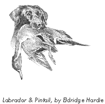
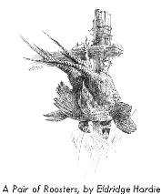
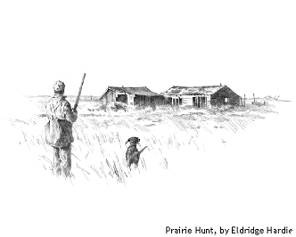

Notes from Afield: An Appreciation of Timothy Murphy’s Hunter’s Log Timothy Murphy, Hunter’s Log
The Dakota Institute, 2011
“When you have shot one bird flying you have shot all birds flying. They are all different and they fly in different ways but the sensation is the same and the last one is as good as the first.”
—Ernest Hemingway, Fathers and Sons
Spanish philosopher José Ortega y Gasset, in his Meditations on Hunting, posited that hunting is a universal and impassioned sport, an “imperative”, and an end in itself. It was Ortega y Gasset’s book, Vincent Murphy’s gift to his young son, Timothy, that taught the boy three valuable hunting lessons, and which would later prove a major influence on the poet’s life and work. In Hunter’s Log, a masterful compilation of thirty years’ worth of selected poems on a single unifying theme, North Dakota poet Timothy Murphy shows the reader how fully he agrees with the philosopher’s belief that hunting is the purest form of human happiness. If there is any doubt about this, one only needs to read the final stanza of his poem “The Chase, Part I. November 24”:
I bear our trophy to the truck in bliss,
the proud retriever frisking at my knees.
Glaucon hunting with Socrates
could hardly have been happier than this.
Although it was written in a rather elitist tone and perhaps more than a little fusty for 21st century readers, Ortega y Gasset’s treatise nevertheless remains one of the most often-quoted works on the subject of hunting and on the relationship of the hunter and the hunted. Murphy’s poem, “Diktynna Thea”, about his beloved Labrador retriever, is dedicated to Ortega y Gasset, whose works influenced such Spanish poets as Lorca, Alonso and Guillén.
Since dogs play such an important role in the hunt as well as throughout Hunter’s Log, I will discuss the second hunting lesson to which Murphy refers, and briefly illustrate how it is delineated in the poem “Huntress”, one of my favorite poems in the book.
Behold the Dog
The second is the lesson of Ortega y Gasset’s sixth chapter, Suddenly We Hear the Sound of Barking: “With the addition of dogs to beaters and shooters, hunting acquires a certain kind of symphonic majesty.” —Timothy Murphy (Hunter’s Log, Preface, iii)
I doubt whether Murphy would go along with the “beaters and shooters” hunting technique referred to in the Ortega y Gasset citation, but the fundamental importance of the hunting dog is immediately evident in Hunter’s Log. Indeed, all three main sections of the book are named for Murphy’s beloved Labradors, Diktynna Thea, Maud Gonne and Bold Fenian (a.k.a. Feeney). Eighteen poems are dedicated to hunting dogs in particular or in general, among them some of the most beautiful in the book, while in another thirty-eight poems hunting dogs appear (Feeney directly in nineteen of them), either on the hunt or wishing they could be. My personal favorite is “Huntress”, dedicated to Dr. Dan Treat, the veterinarian who had the sad task of putting down Maud Gonne.
Huntress
for Dan Treat D.V.M.
Her first bird was a crippled mourning dove.
..She somersaulted down a ditch
…..head over heels in love,
buttoned her bird and bounded up the pitch.
Her first drake dropped beyond a refuge sign.
..Wriggling under the lowest wire,
…..she swam a perfect line
as though posting a proof of her desire.
Her first goose gave her nose a nasty peck.
..Battered by its unbroken wing
…..she leapt to grab its neck
and growling, drag it back for me to wring.
Her first loss was her superhuman ear.
..Hand-signalled on each unmarked run,
…..she could no longer hear
whistling wingtips; even at last, the gun.
At fourteen she was walking into walls,
..fouling the carpet, losing teeth.
…..Farewell to mallard calls
and decoy spreads, wild roosters on the heath.
To St. Francis of Fargo fell the chore,
..the Nembutal a gentle thrust
…..to launch her from our shore.
The last look in her fearless eye was trust.
In six stanzas of perfectly rhymed lines of various meters, Murphy describes his second hunting dog, Maud Gonne, giving the reader insights into her personality and into the strength of their loving and trusting relationship. Each of the first three stanzas shows her as a puppy retrieving different prey, the first a crippled mourning dove (perhaps foreshadowing the sorrowful ending of the poem), then a drake she goes to great lengths to fetch as “proof of her desire”, and finally the goose, fetched by a brave and undaunted hunting companion.
Stanzas four, five and six do just the opposite. Maud Gonne is now in her declining years. Her health grows progressively worse and the hunter finally has the dog put to sleep. Murphy told me this was done in his home, Maud Gonne lying on her dog bed, his friend and veterinarian Dan Treat injecting the Nembutol, the “gentle thrust/to launch her from our shore”. Murphy perfectly portrays the bond between the hunter and his hunting dog in the final line that never fails to make me weep.
I am not a hunter, though I live in the prime deer-hunting country of Northeast Pennsylvania. My father contracted polio when I was five years old, and his paralysis from the waist down, though cured after years of physical therapy, precluded any long-distance trekking. But I do have a dog, my faithful Chola, now going on fourteen, the age when Maud Gonne was laid to rest. Even so, the reader of “Huntress” need not be a hunter or even a dog-owner to understand the understory. Faith, love, trust. The inevitable ending we all must face, for our loved ones, and for ourselves. It is a cycle-of-life poem, ending on a positive note.
Other Lessons
Murphy writes that he also learned, from reading Ortega y Gasset, that the killing of the game is “a ritual preparation for our own mortality” (iii), a concept that leads me to wonder whether, in Hunter’s Log, Murphy uses the hunt as an overarching metaphor, rather than it being the “. . . one big love poem to the prairie, its protagonists, and to a way of life which is endangered” he has told me it is meant to be. This idea of ritual preparation for one’s own death is illustrated in the poems “Hunting Time”, “The Blind” and “Pass Shooter”, which not only includes an epigraphic quote by the philosopher, but also names his treatise and his name in Part IV of the poem:
I V.
Meditations on Hunting: years ago,
corn strips, the winter food plots in these fields
held all the birds our Olson Section yields
when the ploughed soil is flecked with fallen snow.
Two brothers and their labrador, footworn,
worked to the wind. Their father capped the drive,
never quite so alert, quite so alive
as when his sons were coming through the corn.
Arthritic, diabetic, short of breath,
he’d seen the sun rise on a mallard blind.
Ortega y Gasset much on his mind,
his hunts were dress rehearsals for his death.
And then again, hunting might also be considered from a theological perspective, as Dr. Don J. Payne, associate dean and assistant professor of theology and ministry at Denver Seminary, suggests in his “A Theological Reflection on Hunting” in Colonia Outdoors blog entry, February 26, 2011:
Taking the life of another creature can be an experiential, even visceral reminder of the atonement. For Christians, there is no more significant theme than that we are given our lives back by the sacrifice of Another. Hunting can have a sort of sacramental or symbolic quality for those who have come to know what the Bible calls “eternal life” through the sacrifice of Jesus Christ. . . . Hunting is actually a response to creation as God’s gift, allowing and encouraging appreciation of creatures, not a disregard for them. It fosters a holistic ethic by placing hunting in the context of stewardship of creation as a whole … Specifically, it is a reminder that this stewardship is exercised in the context of the world as it is, not as we wish it was or imagine that it was … 1 Timothy 4:3-5 has bearing on the question in that we are enjoined to receive with gratitude what is provided for us from the created order (and Paul was talking about meat).
Indeed, Hunter’s Log contains at least six poems pointing to the Christian ethic (see “Missing Mass” with its striking similarity to Dickinson’s poem LVII “Some Keep the Sabbath”, “Soul of the North”, “Hunting on Thanksgiving” and “Prayer to Saint Michael”) and as for stewardship, there are “Razing the Woodlot”, “Long Shot”, “Nothing is Wasted” and, of course, “The Steward”:
The Steward
Lord, thou deliveredst unto me
five talents; behold, I have gained
five talents more.
Matthew XXV, 20
Pheasants and sharptail grouse
nest near his modest house.
Pronghorn antelope
graze on a Rosebud slope.
Morris no-till drills
pulled by three Versatiles
keep the soil from blowing
off his communal hills—
hills that the bison haunted
and his Sioux forbears hunted,
fields where the cocks are crowing
and his green sons, growing.
At the end of his preface, Murphy writes:
For the final lesson, I ask readers to consider deeply Ortega y Gasset’s final chapter: “The Hunter, the Alert Man.” Hunting teaches us accuracy of observation, and if one is to write about it, or draw it as Eldridge Hardy does so skillfully, accuracy of expression. (iv)
In Hunter’s Log, Murphy eminently proves how well he has taken to heart this final and all-important lesson. The poems in this volume not only portray accuracy of observation and accuracy of expression, but go far afield and provide the reader, through robust, plainspoken poems in a variety of meters, inspired rhyme and meticulous detail — which, in the spirit of the hunter’s log, he fittingly calls “field notes” — with his own meditations on the essence and ethics of hunting. A perfect example of this alertness to detail can be found in the poem “The Chase” whose epigraph reads:
Now then, Glaucon, we must post ourselves (we philosophers)
like a ring of huntsmen around the thicket, with very alert minds,
so that justice does not escape us by evaporating before us.
…………………………………………….. The Republic (432b)
and is followed by the rich language of the three poems of which it is comprised, in phrases such as those in stanza 2 of “The Chase, II. December 8”:
Cascading from the cropland’s terraced shelf,
the sidehill western wheatgrass rolls away
and the seedheads of sideoats grama sway,
descending to the deadend basin’s shore.
The closest roadhead is a mile or more.
“Think like a rooster, Tim,” I tell myself.
But a hunter’s log is more than a record of dates and time, wind direction, temperature, terrain, phases of the moon, location, and other details. Taken as a whole, it is a legacy of stewardship for future hunters.
Timothy Murphy’s poems embody this philosophy. Inspired by heightened observation, keen focus and lived experience, and complemented by the sublime illustrations by highly acclaimed wildlife artist Eldridge Hardie, Hunter’s Log is a clear expression of a man and poet who is truly connected to and immersed in the natural world, and whose “field notes” will be read and appreciated by future generations of poetry lovers and hunters alike.
In his poem, “The Chase Part III December 15”, Murphy, now much older and less agile than the boy of seven who walked for miles as he hunted with his father, somewhat ruefully compares the prairie to a “poem rarely read”, and ends with a prayer:
……Maker of marsh and meadow,
…grant me more time to understand,
more years to walk and memorize this land.
Let us hope this prayer is answered.

|